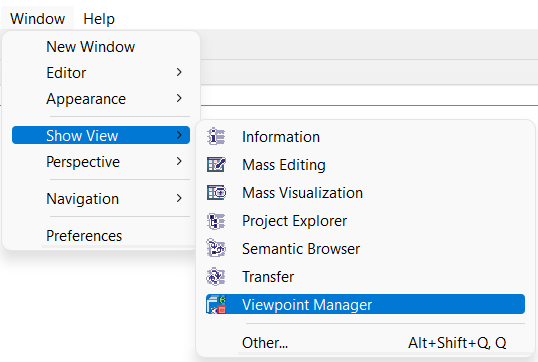
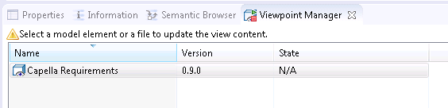
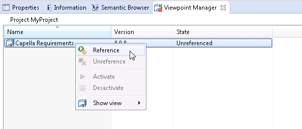

To use Viewpoints, each projects must activate them by using the Viewpoint Manager view:
Windows > Show View > Viewpoint Manager

All Viewpoints installed are listed in this view:

To activate a viewpoint: open the session of a project, and select a model element to set the context of the view on this project.
Then, Right-click > Reference, to activate this specific viewpoint for this given project.

To detach and remove all elements added by this viewpoint in this project, you can unreference it.
For more informations:
See Kitalpha - Architecture Framework Technology Guide > Viewpoint Technology > User's Guide (online documentation)